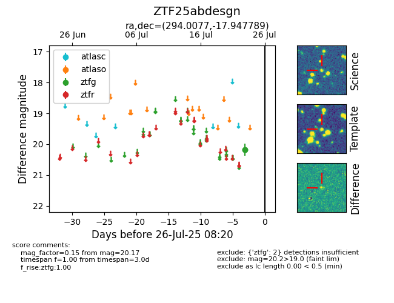

Target ZTF25abdesgn at 2025-07-26 08:20, see:
FINK: fink-portal.org/ZTF25abdesgn
Lasair: lasair-ztf.lsst.ac.uk/objects/ZTF25abdesgn
ALeRCE: alerce.online/object/ZTF25abdesgn
alt names
ZTF25abdesgn (ztf,fink)
coordinates:
equatorial (ra, dec) = (294.0077,-17.94779)
galactic (l, b) = (21.4038,-17.71096)
photometry
last ztfg=20.17
2 ztfg detections
